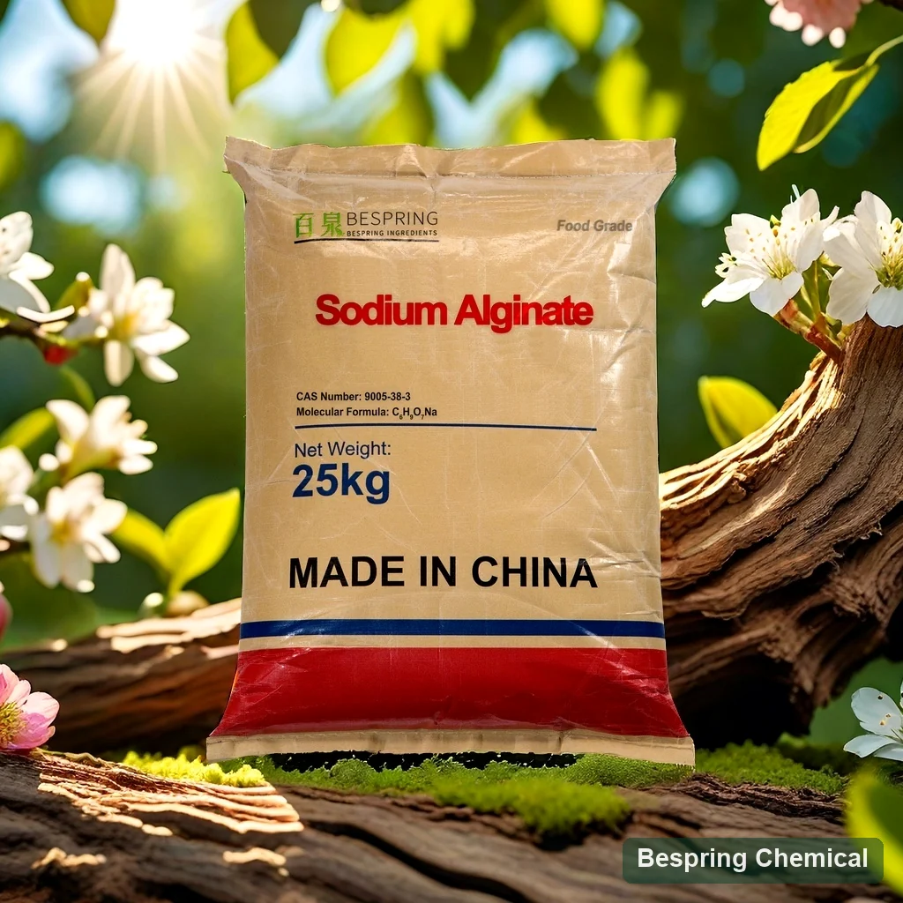
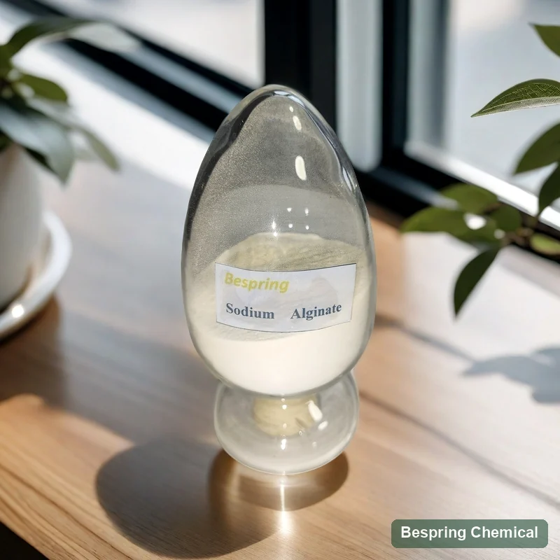
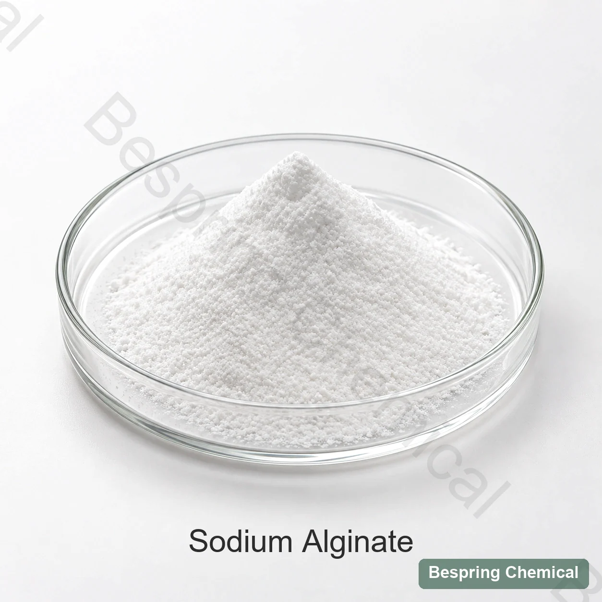
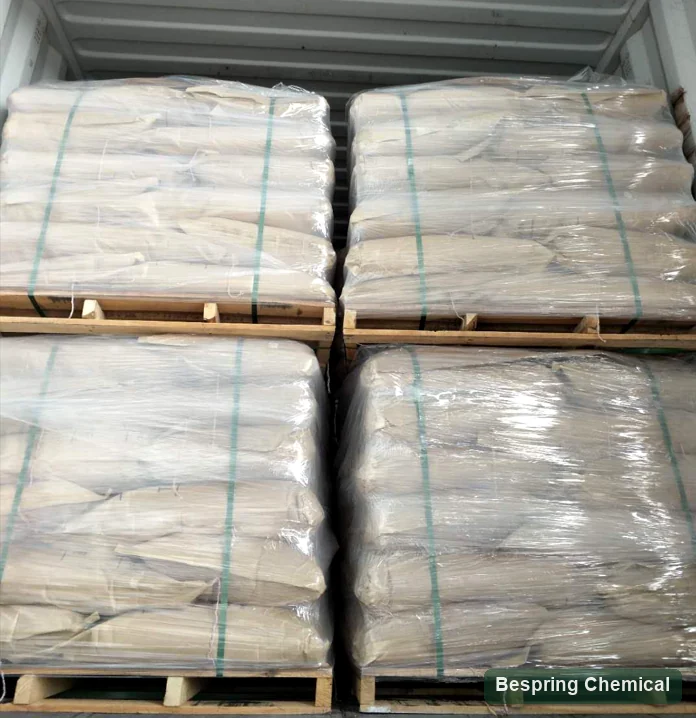

Particle distribution
Fine powder hydrates rapidly but can form fish-eyes; coarse fractions delay full viscosity. Specify a sieve profile, not nominal mesh alone.
Brown-seaweed hydrocolloid · E401 / INS 401
Food grade sodium alginate (E401 / INS 401) is a brown-seaweed-derived hydrocolloid used to thicken, stabilize and form gels with calcium in suitable food formulations. Bespring supplies sodium alginate for grade-specific sourcing. For a comparable quotation, specify the viscosity test conditions, particle size and intended thickening or gel performance.
*Commercial reference only. Confirm the offered grade, current quantity terms, liner and destination requirements before ordering.

Variable natural copolymer
Sodium alginate is the sodium salt of alginic acid, a linear polysaccharide containing mannuronate (M) and guluronate (G) residues in varying sequences. The JECFA sodium alginate specification identifies CAS 9005-38-3, INS 401 and the repeating-unit formula (C6H7NaO6)n. Its listed functions include stabilization, thickening, gelling and emulsification.
This is a polymer with a molecular-weight distribution, rather than a substance with one fixed molecular weight or a single defined hydrate. Grade selection depends on solution behavior, M/G composition and sequence, particle distribution and the food system. Pure sodium alginate, calcium alginate and formulated alginate blends have different identities and should not be treated as equivalent supplies. Food grade must be confirmed independently of industrial or pharmaceutical grades.
Hydrate without surface lumps
Fine powder hydrates rapidly but can form fish-eyes; coarse fractions delay full viscosity. Specify a sieve profile, not nominal mesh alone.
Calcium can cause premature skinning or gel particles. Hardness, pH, salts and sequestrants must match the production water.
Dry blend with a compatible carrier or use validated wetting. Record addition rate, mixer geometry, speed and hydration hold.
State polymer concentration, dry/as-is basis, water, temperature, hydration, instrument, spindle/geometry, rpm or shear-rate curve.
Design calcium availability over time
Soluble calcium diffuses from outside inward. Track skin formation, core set, ion concentration, bath time and size dependence.
A sparingly soluble calcium source plus controlled acidification can distribute calcium more uniformly. Lock calcium and acid release curves.
M/G means the ratio of mannuronate to guluronate residues. G content and block sequence influence calcium crosslinking and texture, together with molecular weight and gel preparation. Request composition data where available or compare a reproducible gel test; a viscosity label alone does not specify the gel.
Calcium supply, polymer composition and gel preparation can affect contraction and water release. Evaluate texture and syneresis after the actual heating, freezing and storage cycle; no fixed stability or shelf-life outcome is implied.
Application-specific acceptance
Calcium-set systems can bind or structure suitable formed foods. Match set time to forming and assess bite, fracture, cooking loss and water release under the actual process.
For food spherification or encapsulation, choose the calcium-delivery route and evaluate droplet size, membrane thickness, core retention, bath carryover and storage integrity.
Separate a viscosity target from a calcium-set target. Test mixing and pumpability, baking or cooking, cut texture and water migration in the actual sauce, bakery filling or topping.
Where the food category and formula support its use, evaluate dispersion, flow and suspension. Acidic or calcium-rich beverages need particular compatibility trials; sodium alginate is not interchangeable with propylene glycol alginate.
Regulatory boundary: E/INS identity does not permit every food or use level. Confirm the food category, function, limit and label in each destination. Consult Codex INS 401 provisions and applicable local rules. In the US, 21 CFR 184.1724 specifies food categories, functions and use limits; it is not a universal dosage recommendation.
Grade selection and quality review
The following commercial references support grade selection. Agree a specification and complete test methods for the offered grade, then compare its batch COA. The ranges do not define one grade and do not establish JECFA conformity.
On small screens, swipe the table to read the reference values and confirmation requirements.
| Field | Commercial reference* | Confirm before approval |
|---|---|---|
| Appearance | White powder | Within JECFA’s broader description; add numeric color if critical |
| Viscosity | 50–1,200 mPa·s or customer requirement | Method absent: concentration, water, temperature, hydration, instrument and shear required |
| Mesh | 40–200 mesh or customer requirement | State sieve standard and full retained/passing distribution |
| Gel strength | 500–1,000 g/cm² or customer requirement | Method absent: alginate/calcium system, geometry, set time and test settings required |
| pH | 6–8 | State solution ratio, water and temperature |
| Loss on drying | ≤15%; 105°C / 4 h | Same stated limit and conditions as cited JECFA; verify method and batch result |
| Ash | 18–27% | Clarify total ash vs. sulfated ash and method |
| Lead / arsenic | ≤5 / ≤3 ppm | 5 / 3 ppm by mass = 5 / 3 mg/kg, matching cited JECFA values; verify market limits and element-specific tests |
| “Heavy metals as Pb” | ≤20 ppm | Legacy aggregate test; request element-specific risk panel |
| Microbiology | TPC ≤1,000; yeast/mould ≤100 CFU/g; E. coli and Salmonella absent/25 g | TPC and yeast/mould references are lower than cited JECFA values; methods and organism/sample-size criteria are not identical |
| Commercial | 25 kg; 500 kg MOQ; 18 MT unpalletized / 15 MT palletized per 20GP | Confirm grade, liner, pallet pattern, current offer and actual loading |
The viscosity and gel-strength ranges need complete methods. Confirm concentration and mass basis, water quality, temperature, hydration time, instrument and shear settings. For gel strength, also specify calcium source and level, geometry, setting time and measurement conditions. The legacy g/cm² notation needs an agreed force/area convention; it is not interchangeable with penetration force or another texture result.
Standard and batch evidence: the cited JECFA monograph uses a dried-basis carbon-dioxide assay and separately specifies water-insoluble matter; neither is reported in this commercial table. Ask for the relevant tests rather than assuming conformity. Its TPC and yeast/mould maxima are 5,000 and 500 per gram, whereas the commercial references are 1,000 and 100. Coliform and Salmonella test criteria also require method and sample-size review. “Heavy metals as Pb” does not establish individual lead, cadmium, mercury or other element results.
Documents and supply: request the offered-grade TDS/specification, SDS, representative COA and batch COA, plus required source, allergen and applicable certificate documents. Availability and certificate scope must be confirmed. The 25 kg, 500 kg MOQ and 20GP loading figures are commercial references, subject to the actual offer and packing plan. Confirm storage instructions and shelf life from grade documentation; shelf life must be specified for the offered grade.
Identity, polymer description, functional uses and purity methods.
Review the JECFA monographCurrent participating food categories, functions, limits and notes.
Review INS 401 provisionsEvidence that solution rheology alone does not establish calcium-gel performance.
Review the open-access studyChoose by mechanism
Cold ionotropic gelation with calcium plus solution thickening; mineral control is central.
Compare κ/ι/λ type and its ion/protein interactions when evaluating an alternative gel or stabilizer.
Degree of esterification, calcium, soluble solids and pH define HM/LM mechanisms.
Compare shear-thinning thickening and suspension requirements; xanthan gum does not replicate calcium-alginate gelation.
These links support function and grade comparison, not equal-dose substitution. Recheck the food category, process and quality specification before changing ingredients.
Bench-to-line approval
Confirm INS 401, seaweed/source declarations, destination standard and exact grade.
Compare particle distribution and complete viscosity/shear curve under matched water.
Measure calcium, magnesium, pH, salt, phosphate/citrate and other sequestrants in the formula.
Track set time, penetration, strength, elasticity, fracture and syneresis with the intended calcium route.
Validate heat, freeze–thaw, acid, shear, storage, reheat and package conditions.
Approve methods, COA, sensory/color, mesh, microbiology, liner and change notification.
Appearance and loading references



Buyer questions
State concentration and dry/as-is basis, water quality, temperature, hydration time, instrument, spindle or geometry and speed or shear rate. Match these conditions before comparing suppliers; the displayed 50–1,200 mPa·s range alone does not define an equivalent grade.
Not reliably across grades. M/G composition and sequence, molecular weight and calcium delivery all affect the result. Specify a reproducible gel test or application texture target separately from solution viscosity.
Rapid surface hydration can trap dry powder, while available calcium can produce local gel particles. Review particle size, dispersion, water hardness and addition order before introducing the intended calcium source or acid.
No. They are inquiry references. A COA reports a particular batch against an agreed specification. The cited JECFA monograph also includes a dried-basis assay and water-insoluble-matter requirement, which this commercial table does not report.
Do not assume an equal-dose replacement. Calcium alginate, propylene glycol alginate, formulated blends, carrageenan, pectin and xanthan gum have different identities or functional behavior. Confirm food grade, market permission and performance in the actual formulation.
Provide the food standard, viscosity method, gel or thickening target, calcium route, application and process, quantity, packaging, destination and delivery requirements. Request the offered-grade specification, TDS, SDS, COA and required declarations; confirm document availability and scope before approval.
Rheology- and ion-led sourcing
Share the required food grade and test conditions so we can review sourcing fit, documents and commercial terms for the proposed application.